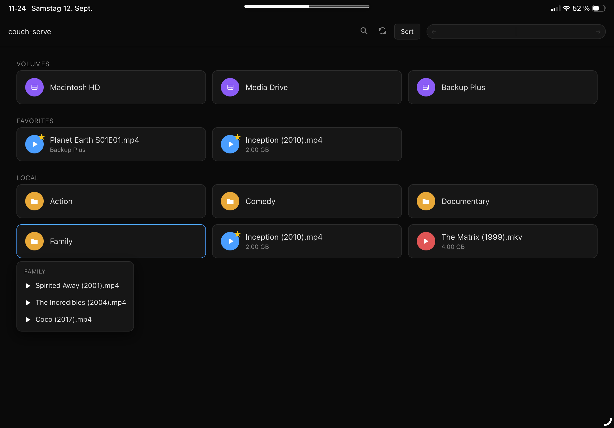

couch-serve: A Hoarder's Dream
The Couch computing saga: 1. One More Hop · 2. A Hoarder's Dream · 3. The couch group
I'd spent months making everything on my Mac reachable from my iPad. Databases, servers, even the Mac's screen. On Saturday I noticed the one thing that wasn't: the movies on my external hard drive.
There are media centers for this. Every one I've looked at wants an account, a scan of every file, and a settings page longer than the movie. My movies are scattered across two hard drives, in folders still bearing the names they arrived with, nested inside more folders only I can navigate by memory. A media center looks at that and asks me to clean up before I'm allowed to watch anything.
I wanted to know how far I'd get if I just asked Claude to build the thing from scratch.

Point it at a folder and go
The brief was short. A service that runs on my Mac, that I can open on my iPad, that streams whatever I point it at. No accounts, no metadata, no library scan. Just a folder.
The first version landed in minutes. A single JavaScript file running Node.js and Express, a small framework that turns a Mac into a web server. A dark page that listed video files and played them. MP4 worked out of the box. My assistant sent me the link directly to my iPad. I tapped it and there it was: my files, on the couch.
I expected the browsing to feel sluggish. A web page asking a server to read a directory over Wi-Fi, every time I tap a folder. It didn't. Each tap reads one directory level, a few bytes, and the result is back before my finger lifts. I started clicking deeper. Subfolders, shortcuts, an external USB drive. All instant.
That was the moment the scope changed. If navigation is free, I don't need to flatten anything. I can just browse.
Videos come in all shapes and sizes
MP4 played. Everything else didn't. An AVI from 2019, a Flash video, an MKV rip. Safari can only play what Safari can play, and that's a short list.
This is the point where a normal project would tell me to install a dedicated video player, or to convert every file on my Mac first. I asked Claude a different question: can FFmpeg, a video conversion tool, convert a movie while sending it straight to the browser?
You can convert the whole file first, or you can cut it into small pieces and let the browser fetch them one at a time. The second one is called HLS. It's how Netflix works. And Safari speaks it natively.
Eighty-seven minutes and sound
I plugged in my external hard drive and pointed the server at a real movie. An AVI, eighty-seven minutes, a format my iPad has never heard of.
The first attempt said "Live Broadcast" and played nothing. The second showed about thirty frames and froze. The third waited for the entire file to finish converting before it would start, which doesn't work when the movie is an hour and a half long.
We kept tweaking how the segments were produced and when the browser was allowed to start pulling them. Wait for two segments instead of the whole file. Read the playlist in one piece so Safari doesn't get a half-written version. Let it start playing while the rest is still encoding.
Then the picture moved. But there was no sound. The movie's audio was surround sound, and the conversion had silently dropped it. We forced it down to stereo and turned up the quality.
When the first attempt stuttered, we overreacted. We built a progress indicator that kept asking the server how far it had got, updating live on screen. Then the real fixes landed and videos started in under a second. We removed the whole thing.
Sound came through. I dragged the playback bar to the middle and it jumped. I dragged it to the end and it jumped. My laptop converts at about fifty times playback speed, so by the time I'd watched the opening scene, the whole file was ready. An eighty-seven-minute AVI on an iPad, with working scrubbing and sound, from a server that didn't exist that morning.
One feature led to another
The first version served one folder. Then I wanted subfolders. Then sorting. Then a search that reaches five levels deep. Then double-tap to skip ten seconds, because that's how every streaming app works and my hands expected it. Then a loop button for short clips. Then the browser's back button had to work, because on an iPad there's no address bar to retype.
The server stayed a single file.
The biggest jump was adding every drive to the start page. My Mac has its internal drive and two external ones. Now the start page shows three purple icons, and tapping one browses that drive. I'm on the couch, reaching into hardware I can't even see from here.
The mess is not the problem
I know where things are. The path makes no sense to anyone else, but I've built a mental map over years of saving things wherever felt right at the time. No folder hierarchy will improve that. It would only force me to maintain two systems, the map in my head and the one on disk, and the disk one would rot the moment I stop caring.
So instead of organizing, I added favorites. Long-press a video, tap the star. It shows up on the start page. Long-press the favorite, tap "Go to folder." Now I'm in the folder it came from, seeing what's next to it. Maybe there's a sequel I forgot about. Star that too.
The favorites aren't bookmarks. They're threads in a web. Each one connects to a corner of the mess, and the "go to folder" button connects the corners to each other. I didn't build a library. I grew a web in the chaos, and it connects parts that were never connected before.
One file, no config, everything under your fingertips
It still fits in one JavaScript file. Point it at a folder, open the browser, and it removes the temporary video pieces when it stops.
node server.js ~/Movies
That's the setup.
I didn't need to reorganize my drives. I needed a file browser that learned to play video.
Clone it, steal it, make it your own
The whole project is open source: github.com/scriptease/couch-serve.